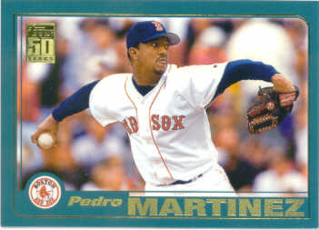

2001 Topps
#60 Pedro Martinez
When I was looking at this card, I was thinking, wouldn't it be great to have
a shot like this of Ruth, or Mathewson, or Young pitching? One of my collecting
buddies pointed out that Chad Curtis (#540) should be
the winner for this set, but this is my show :) There is also Gerald Williams (#52)
doing his best Sadaharu Oh. The 2001 set had a realy nifty subset called "Golden Moments". The first reason it
was nifty is that it was a "subset", that is, part of the numbered set, not an "insert" set that would be a pain to
complete. Here are the coolest ones:
- #380 Bill Mazeroski rounding third after winning the '60 series
- #381 Reggie Jackson after his third HR in game 5 in 1977
- #382 Kirk Gibson after putting the dodgers ahead in the 9th with a 2-run HR of Eckersley
- #383 Roger Maris hitting one of his 61 in '61
- #386 Joe Carter hitting the walk-off winner in the 1993 series. I love this picture, because
I called this home run. I could tell that Carter was sitting on the slider, because Mitch Williams couldn't throw a strike with
anything else. Of course, I had no witnesses :(
- And my personal favorite #791 Carlton Fisk winning game 6 of the 1975 series. I was up very late
watching that game with my dad and my brother. Cool stuff
{kind=link}
{kind=link}
{kind=link}
{kind=link}
{kind=link}
{kind=link}
{kind=link}
{kind=link}